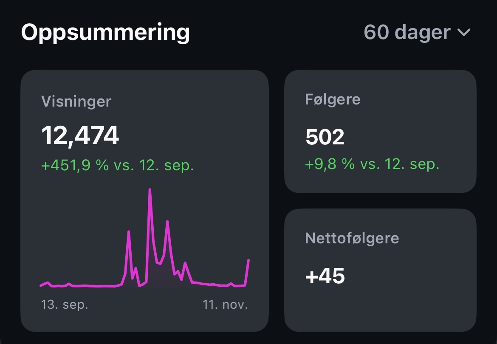

praktinf · center for digital narrative · høsten 2026
POV: du er praktikant på CDN
Ingrid Ormevik
praksisplassen · min andre praksis på cdn
Jeg fikk Instagram-passordet til et senter for fremragende forskning
Scott Rettberg, senterdirektør · Andreas Hadsel Opsvik, veileder
Equinox 23.09 · After Virtual Reality 15.–21.10
Andre praksis på CDN · DIKULT210 i vår · kjente folkene og forskningen fra før
avsender, budskap, målgruppe og mål
after virtual reality · kommunikasjonsplanen
Før første post: en plan
- Hvor er vi?forskere til forskere · LinkedIn · filterboble
- Hvem vil vi nå?BIFF-publikummet · fagmiljøet
- Hva vil vi oppnå?folk inn i Visningsrommet, USF Verftet
- Hvordan?teasere → påmelding → åpning → én post om dagen · tagge BIFF og USF
strategisk kommunikasjon, som i Rotary-planen
cdn equinox · litteraturhuset · 23.09
En senterdirektør som rapper, klippet for hånd
Scott rapper · 20 forskere · beat i Suno · hver linje på beaten i Premiere
1 filmdag · 2 dager klipping · 1 dag finpuss · 5–6 krasj i Premiere
Full sal · ingen reklame før · filmen = markedsføringen etterpå
stopp-effekten: start med det merkeligste
under og etter utstillingen
Poste mens det skjer
Én post om dagen · kunstnerne tagget
Instagram: kort · Facebook: hele programmet
Nest-filmen: Scotts spesialønske · «kulere enn jeg er» · 16 versjoner
Under festivalen: kvantitet og timing før kvalitet · bedre ute i tide enn perfekt for sent
kairos · mottakertilpasning · kildekritikk før hver post
scott i reiret · åpningen 15.10
Rookie-feil: ingen mikrofon
«mikrofon på alt». nå vet jeg hvorfor.
toppinnhold · visninger per post · instagram innsikt, 9.11
Størst rekkevidde
2 og 3 = samarbeid med USF Verftet · svake bånd
after virtual reality · usf verftet · 15.–21.10
Utstillinger og publikumsarrangementer er døren ut til publikum
ca. 800 besøkende · 7 dager · ifølge Scott
To damer · poesibok i AR · diktene steg opp av sidene
etikk: det var deres øyeblikk, så jeg filmet det ikke
rollene fra forelesningen · 10 videoer postet · instagram og facebook
Én person, sju jobber
- grafikkgrafiker
- videovideoprodusent
- fotofotograf
- lydlydtekniker
- tekstskribent
- planstrateg
- postingSoMe-spesialist
praktinf · det kurset ba om, og det jeg gjorde
- Kommunikasjonsplanhvem, hvor, hva og hvordan, fire faser, som i Rotary-planen
- MålgruppeanalyseBIFF-publikummet og fagmiljøet
- Prosessmodellenstøyen er feeden, tilbakemeldingen er Innsikt
- Kildekritikkåpningstider, verk, roller · Innsikt med periode og n
- Korte tekstercaptions på engelsk, kort på Instagram, programmet på Facebook
- Pressemelding og mediekontaktskrevet i kurset · spurte Andreas om pressen
- Nettsidevurderingingen nettside da jeg kom · ny under Equinox
- Etikksamtykke, personvern, kreditering og åpenhet om KI-behandlet lyd
- KrisekommunikasjonCDN-arret · Andreas med plaster
- Overleveringalt materiale sortert og levert til CDN
sluttresultatet · instagram innsikt · 13.09–11.11 · n = 12 474 visninger
Over halvparten nådde nye kontoer
Reirfilmen · onsdag 11.11 kl. 21 · +770 % mot vanlig · 79 % ikke-følgere · nr. 2 av 10
prosessmodellen: budskapet må gjennom støyen, og Innsikt er tilbakemeldingen

Some rooms you just want to stay in
«Sannheten ligger i poesi, og ikke i retorikk.»
fra første forelesning, 28. august